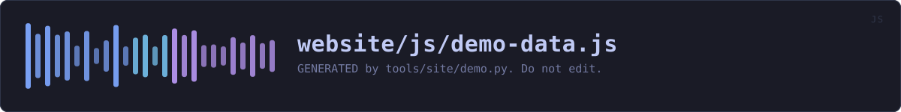

website/js/demo-data.js
the website's source · 353 lines · read it on GitHub
WHAT IT DOES
GENERATED by tools/site/demo.py. Do not edit.
The facts the interactive demonstration is drawn from: the tabs the desktop application has, and exactly what each command line subcommand printed when it was last captured. Both come from the source rather than from anybody's memory of it, so the model in the page cannot quietly stop matching the program it is a model of.
IN PLAIN WORDS
A list of what is in the app and what each command prints, taken straight from the code, so the demonstration on the website stays honest when the program changes.
WHAT CALLS WHAT
Read out of the source: an edge means the callee’s name appears, called, inside the caller’s body. A syntactic reading, not a resolved one.